3．阿基米德关于面积和体积的工作
若要拿一个人的工作成就来代表亚历山大时期的数学特性，谁也不能比阿基米德（公元前287—前212）更合适的了。这位古代最伟大的数学家是一位天文学家的儿子，生于叙拉古（Syracuse），当时西西里岛的一个希腊殖民城市。他青年时代去亚历山大受教育。虽然他以后回到叙拉古并在那里度过其余年，但他始终与亚历山大保持联系。他在希腊学术界很有名，很受同时代人的钦佩与尊崇。
阿基米德才智高超，兴趣广泛（无论是实用方面和理论方面的），并具有非凡的机械技巧。他的数学工作包括用穷竭法求面积和体积，计算π（在这过程中他算出了平方根的不足近似值和过剩近似值），并提出用语言表示过剩近似值的一种新方案。在力学方面，他算出许多平面形和立体形的重心并给出杠杆定理。论述水中浮体平衡问题的流体静力学的基础是他奠定的。他也以一个优秀的天文学者闻名于世。
他的发明创造超出当时技术水平如此之远，以至后代流传了无数关于他的传说和故事。在一般人的心目中，他的发明比他的数学还重要，虽然他和牛顿、高斯（Carl Friedrich Gauss）并列为三个最大的数学家。他在年轻时造了一个天象仪（planetarium），那是一个用水力推动的模仿太阳、月球和行星运动的机构。他发明一种从河上提水的水泵（阿基米德螺旋提水器）；他说明怎样用杠杆挪动重物；他给叙拉古的国王赫农（Hieron）造了一组复杂的滑车把船吊到河里。他在叙拉古遭罗马人攻击时发明军器和投石炮来防守。他利用抛物镜面的聚焦性质，把集中的阳光照到攻城的罗马船上把它们焚毁。
关于阿基米德的最有名的故事也许要算他发明测出金王冠掺假的方法。叙拉古王定做了一顶王冠，交货后他怀疑其中掺杂贱金属，就让阿基米德测定王冠所含材料，而不得把金冠弄毁。一天他在洗澡时看到他的部分身体被水浮起，就突然发现了解决这一问题的原理。他为此非常兴奋，竟然光着身子跑到街上高喊“有啦！”（Eureka！）他发现浸在水里的物体所受的浮力等于其所排出的那部分水的重量，而用这原理便可测定金冠的成分（见第7章第6节）。
虽然阿基米德的发明搞得异常巧妙和成功，但传记家普卢塔赫却说这些发明只不过是“研究几何之余供消遣的玩意”。据普卢塔赫所说，阿基米德“志气如此之高，心灵如此之幽深，科学知识如此之丰富，以至虽然他的这些发明使人们把他看得神乎其神，他却不屑把这些东西写成书流传后世，把所有直接为了使用和谋利的机械和技巧都看作是鄙贱之事，而一心追求那美妙的、不夹杂俗世需求的学问”。但是普卢塔赫在编写故事方面的声誉远远超过作为历史学家的声誉。阿基米德的的确确写过一些力学机械方面的书，我们知道他有一本书的书名叫《论浮体》（On Floating Bodies），另一本叫《论平板的平衡》（On the Equilibrium of Planes）；其他两本《论杠杆》（On Levers）和《论重心》（On Centers of Gravity）已失传。他还写过光学方面的失传了的著作，他并非不屑于写书记载他的发明；还有一本书虽也失传但我们知道他是确实写了的，那就是《论制作球》（On Sphere-making），这是讲他怎样发明一个仪器模仿日、月和五个行星绕（固定的）地球运动的。
阿基米德的死预告了整个希腊世界将要遭受的命运。在迦太基（Carthage）和罗马的第二次布匿战争（Punic war）期间，叙拉古于公元前216年和迦太基结盟。公元前212年罗马人攻入叙拉古。当阿基米德在沙地上画数学图形时，一个刚攻进城的罗马士兵向他喝问。据传说，阿基米德是那样出神地在搞他的数学以至没有听到那罗马兵的喝问，于是那个士兵就杀死了他，尽管罗马主将马塞勒斯曾有令不许杀害阿基米德。当时阿基米德75岁，仍是精力充沛之时。为示“补偿”，罗马人给他造了一个费工很多的陵墓，墓碑上铭刻了阿基米德的一个著名定理。
阿基米德的著作都以小册子的形式出现而不是大部头巨著。我们对这些著作的知识都来自希腊文手稿和自13世纪起从希腊文翻译的拉丁文手稿。有些著作现只存拉丁文译本。1543年塔尔塔利亚（Niccoló Tartaglia）确曾把阿基米德的一些著作译成拉丁文。
阿基米德的几何著作是希腊数学的顶峰。他在他的数学推导里应用欧几里得和阿里斯塔俄斯的一些定理以及其他一些他说是显然可知的结论——即是说可以很快从已知结果推出的事实。因此他的证明是有切实根据的但不易被我们看懂，因我们不熟悉希腊几何学家的许多方法和结论。
阿基米德在他的《论球和圆柱》（On the Sphere and Cylinder）一书中先讲述定义和假定。第一个假定（或公理）说相同两端点间的所有（曲）线之中以直线段为最短。其他公理谈到凹曲线的长度和曲面。例如，图5.1中的ADB是假定为小于ACB的。阿基米德用这些公理就可把圆周长和内接、外切正多边形的周长进行比较。
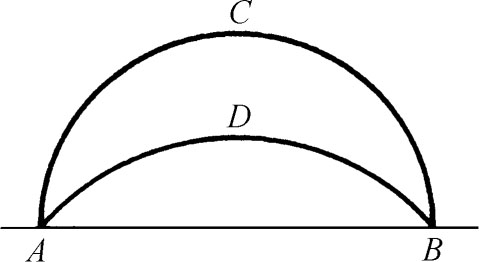
图5.1
他在第一篇中论述几个预备性的命题后，证明了：
命题13．任一正圆柱（不计其上下底）的表面积等于一圆的面积，该圆半径是圆柱高与底直径的比例中项。
接着讲许多关于圆锥体积的定理。很值得指出的是
命题33．任一球面积等于其大圆面积的四倍。
命题34的推论。以球的大圆为底、以球直径为高的圆柱，其体积是球体积的3/2，其包括上下底在内的表面积是球面积的3/2。
这里他把球的面积和体积同外切球的圆柱的面积和体积进行比较。这就是那个根据他的遗愿铭刻在他墓碑上的著名定理。
然后他在命题42和43里证明球缺ALMNP的表面积等于以AL为半径的圆的面积（图5.2）。球缺小于或大于半球都行。
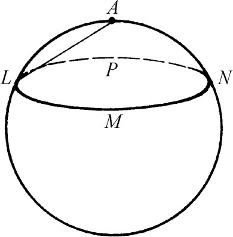
图5.2
关于曲面形面积和体积的定理是用穷竭法证明的。阿基米德用内接和外切的直边形来“穷竭”那个面积或体积，然后也同欧几里得一样用间接证法来完成论述。
《论球和圆柱》的第二篇内容主要是关于球缺的，其中有些定理值得指出，因它们含有新的几何代数内容。例如他给出：
命题4．用平面割球为两段，使其体积之比等于所给之比。
这个问题从代数上讲相当于解三次方程
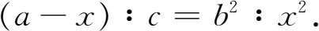
阿基米德通过求一抛物线与一等轴双曲线的交点，用几何方法解出这一方程。
《论劈锥曲面体与球体》（On Conoids and Spheroids）一书论述圆锥曲线旋转形体的性质。阿基米德所说的直角劈锥曲面体是指一旋转抛物面。（在阿基米德之时仍把抛物线看作是直角圆锥的截面。）钝角劈锥曲面体是指旋转双曲面的一支。阿基米德的所谓球体是我们今天所说的椭球（扁球体或橄榄球体），也就是椭圆旋转体。这书的主要目的是求这三种形体为平面所割一部分的体积。书中还含有阿基米德在圆锥曲线方面的研究（在讨论阿波罗尼斯著作时已提及）。正如在他所写的别的书中一样，他假定了一些他认为易于证明或可用他过去所讲方法证明的定理。许多证明是用穷竭法的。其内容可举下列几个命题为例：
命题5．若AA′和BB′分别是一椭圆的长、短轴，d是任一圆的半径，则椭圆与圆的面积之比等于AA′·BB′与d2之比。
这定理说：若2a是长轴，2b是短轴，而S和S′是椭圆和圆的面积，则S/S′＝4ab/d2。由于
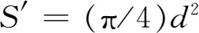
，故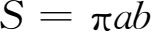
。命题7．给定中心为C的一椭圆，以及垂直于椭圆所在平面的一根直线CO，可作一以O为顶点的圆锥，使所给椭圆为其一截面。
阿基米德显然知道从同一圆锥至少可得出几种圆锥曲线中的某些种。这是阿波罗尼斯用过的事实。
命题11．若一旋转抛物体为一通过轴或平行于轴的平面所截，则截面为原来生成那旋转体的抛物线所围平面……若以垂直于轴的平面截，则截面是中心在轴上的圆。
对旋转双曲体和（椭）球体也有类似的结果。
这书的主要结果还有：
命题21．旋转抛物体任一截段的体积是同底同轴圆锥或锥台体积的两倍（原文是“一半”。——译者）。
底是决定截段的那个平面从旋转抛物体所截得的平面图形（椭圆或圆）的面积（图5.3）。抛物线BAC及底面上的BC是由过旋转轴且垂直于原截面的那个平面截出的。EF是抛物线上平行于BC的一根切线，A是切点。过A作平行于旋转轴的直线AD，这是截段的轴。可以证明D是CB的中点。又，若底是椭圆，则CB是长轴；若底是圆，则CB是其直径。圆锥与截段有相同的底，其顶点为A，其轴为AD。
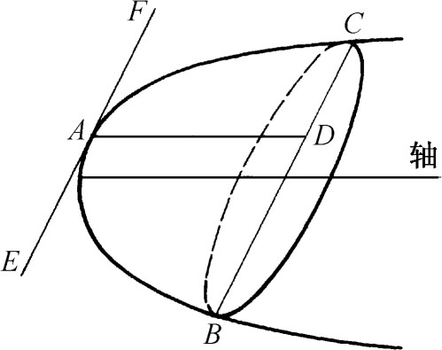
图5.3
命题24．若以任意两平面从旋转抛物体截出两段，这两截段（体积）之比等于其轴的平方之比。
为举例说明这定理，设两平面是垂直于旋转抛物体之轴的（图5.4），则此两体积之比等于AN2比AN′2。对旋转双曲体和椭球体也有类似定理。
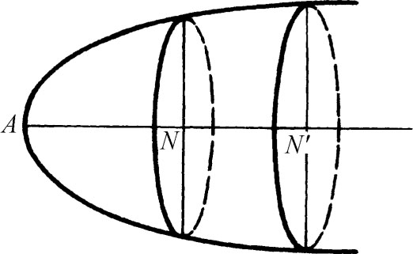
图5.4
阿基米德有一些思想新颖的著作，其中之一是题为《方法》（The Method）的短篇论文，在那里他指出怎样用力学的思想得出正确的数学定理。这作品是直到1906年这样晚近的年代才在君士坦丁堡的一个图书馆里发现的。手稿是10世纪抄写的羊皮纸本，包括早从其他来源业已知悉的阿基米德的其他作品。阿基米德以求抛物线弓形CBA的面积为例，来说明他发现数学定理的方法（图5.5）。在这个基本上属于物理性质的推理过程中，他利用了在别处得到的关于重心的一些定理。
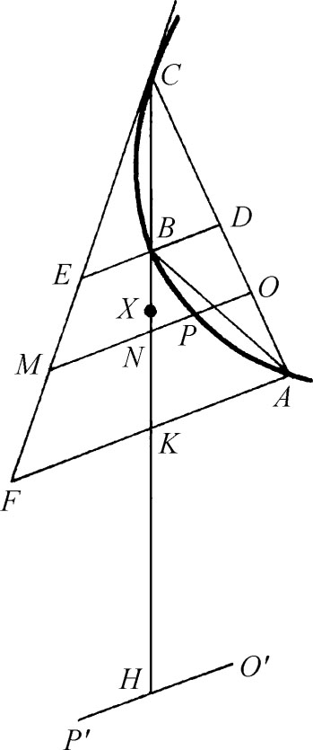
图5.5
ABC是直线AC和弧ABC所围的任一弓形。设CE是抛物线在C处的切线；D是CA的中点；又设DBE是通过D的一直径（平行于抛物线轴的直线）。于是阿基米德提出欧几里得《二次曲线》中的结果
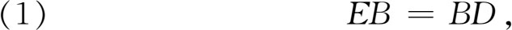
但欧几里得对这一事实的证明于今未知。现作AF平行于ED，并设CB交AF于K。于是根据（1）和相似三角形的关系，可证FK＝KA。把CK延长到H，使CK＝KH。其次，令MNPO是抛物线的任一直径。于是根据（1）及相似三角形之理得MN＝NO。
现在阿基米德把弓形和三角形CFA的面积一起进行比较。他把弓形面积看作是由PO这种线段积成的，把三角形面积看作是由MO这种线段积成的。然后他证明
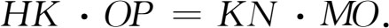
上式从物理上讲的意思是：若把KH和KN看作杠杆的两臂，其中K是支点，则若把OP看作是放在H处的重物，它就会与放在N处的重物MO相平衡。因此，把所有像PO这样的线段放在H处，将与所有像MO这样的线段各自（把质量）集中于其中点（该线段的重心）后放在H处的重量相平衡。但把所有线段MO（的质量）集中于其重心处“相当”于把三角形CAF（的质量）集中于其重心处。阿基米德在其《论平板的平衡》一书中证明这重心是CK上的点X，这里有KX＝（1/3）CK。根据杠杆定律，KX·三角形CFA的面积＝HK·抛物线弓形的面积，或即
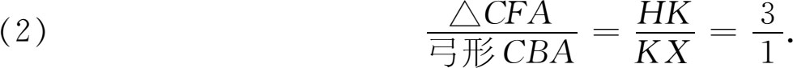
阿基米德还想找出弓形和三角形ABC的面积关系。他指出这三角形（的面积）是三角形CKA的一半，这是因为两者有公共的底边CA，而前者的高很易于证明是后者高的一半。而三角形CKA（的面积）又是三角形CFA（的面积）的一半（因为KA是FA的一半）。因此三角形ABC是三角形CFA的四分之一，于是根据（2）他就得出弓形ABC与三角形ABC的面积之比是4∶3。
在这种力学方法里，阿基米德把抛物线弓形和三角形CFA的面积看成是无穷多线段之和。他说这种方法是用于发现定理的方法而不是严格的几何证明。他在这篇论著中用这方法发现关于球段（或球缺）、圆柱段、椭球段和旋转抛物段的一些定理，以说明这种方法是多么用之有效。
阿基米德在他的《抛物线的求积》（Quadrature of the Parabola）一书中给出求抛物线弓形面积的两种方法。第一种方法同刚才讲过的力学方法类似，即仍用杠杆原理论述面积之间的平衡，但面积的选取法不同。他的结论当然同上面的（2）一样。这是在命题16中给出的。阿基米德得知这一结果后就想证明它，并着手依靠一系列定理（命题18～24）作出严格的数学证明。
第一步是证明抛物线弓形可为一系列三角形所“穷竭”。设QPq［图5.6（a）］是抛物线弓形，并设PV是直径，它平分弓形中所有平行于底边Qq的弦，因而V是Qq的中点。从直观上显然可以看出并在命题18中证明：P处的切线平行于Qq。其次作QR及qS平行于PV。于是三角形QPq是平行四边形QRSq的一半，所以三角形QPq大于抛物线弓形的一半。
作为这定理的一个推论，阿基米德证明抛物线弓形可用一个多边形任意接近，因若在PQ所割出的弓形里（其中P1V1是该弓形的直径）作一三角形后，可用简单的几何（命题21）证明：三角形PP1Q的面积＝（1/8）三角形PQq的面积［图5.6（b）］。因此三角形PP1Q和作在Pq上的三角形
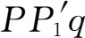
（它也有三角形PP1Q那样的性质）合在一起是三角形PQq的1/4；而且根据上一段的结果，这两个较小的三角形填满所在的抛物线弓形的一半以上。在新弦QP1，P1P，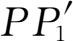
和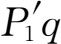
上作三角形的过程可以继续下去。这部分证明同相应的欧几里得关于两圆面积定理部分的证明完全类似。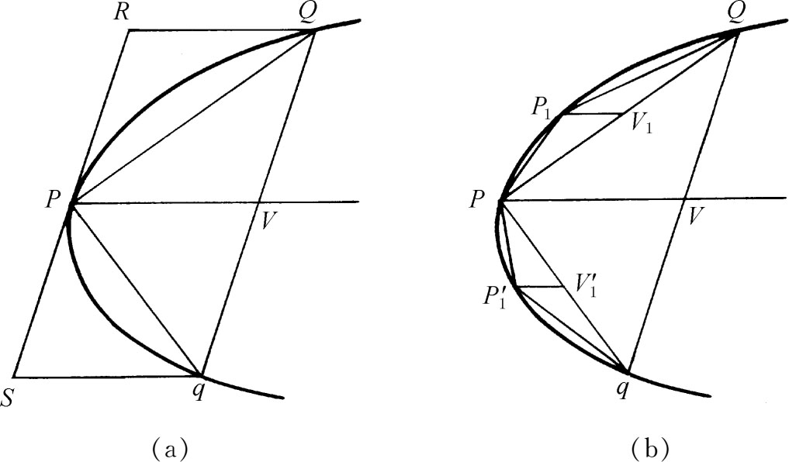
图5.6
因此我们就有了足够的条件，可以应用欧几里得《原本》第十篇的命题1。就是说，现在可以说抛物线弓形可用这样的多边形面积来逼近，它是在原来的三角形PQq上加添一系列三角形而得出的，即可用面积
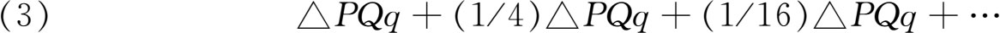
中取有限项来逼近；换言之，弓形面积与（3）中取有限项之和的差可以弄得比任何预先指定的量小。
然后阿基米德用间接证法来完成穷竭法所作的证明。他先证明，对于公比为1/4的几何数列的头n项有
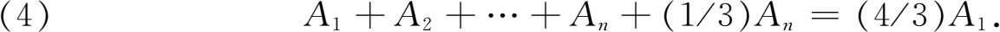
这可用多种方式立即证明；我们可以用几何级数头n项之和的公式来作。在应用（4）时，A1就是三角形PQq。
然后阿基米德证明抛物线弓形的面积A不能大于或等于（4/3）A1。他的证明无非就是：若面积A大于（4/3）A1，那他可以取一组（有限个）三角形，使其和与弓形面积之差小于任一给定的量，因此可使和S大于（4/3）A1，即
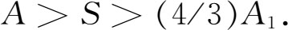
但据（4），若S有m项（比方说），则
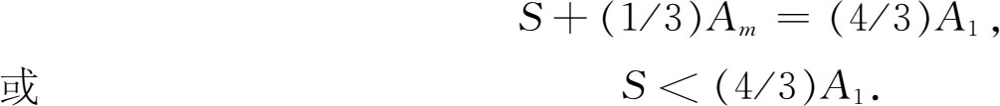
于是就得出一个矛盾。
同样，若设抛物线弓形面积A小于（4/3）A1，则（4/3）A1-A是一确定的数。由于阿基米德所作的三角形是愈来愈小的，所以他可得出这样一系列内接三角形，使
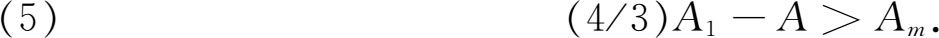
这里Am是序列中的第m项，它在几何上代表2m-1个三角形之和。但因据（4）有
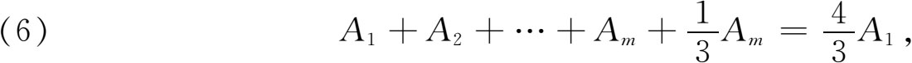
于是
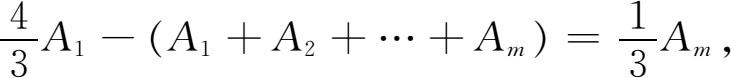
或
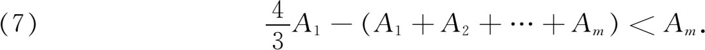
于是从（5）及（7）得
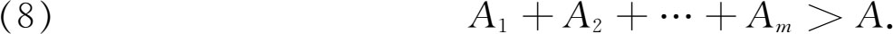
但内接三角形之和总小于弓形面积。因此（8）是不可能的。
当然，阿基米德实际上求出了无穷几何级数的和，因当（4）中的n变为无穷时An趋于0，于是无穷级数之和为4A1/3。
阿基米德用力学方法和数学方法求抛物线弓形面积的著作说明他对物理论证和数学论证分得何等清楚。他的严格性比牛顿和莱布尼茨著作中的高明得多。
阿基米德在他的著作《论螺线》（On Spirals）中是按下述方式来定义螺线的。设有一直线（射线）保持在一平面内绕其一端匀速转动，而同时从固定端起有一点沿该直线匀速移动；这时动点就会描出一螺线。用我们的极坐标，这螺线的方程是
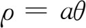
。图5.7所画的那个曲线，θ是以顺时针方向作为正方向的。著作中最深刻的结果是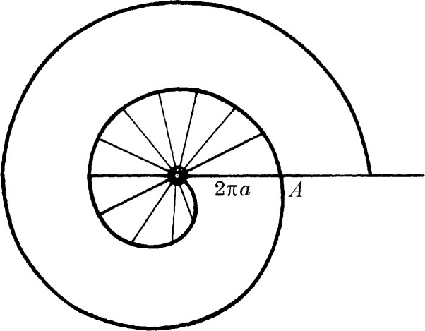
图5.7
命题24．螺线第一圈与初始线所围的面积［图中有阴影线部分的面积］等于第一个圆的三分之一。
第一个圆是半径为OA的圆，这半径等于2πa，因此阴影线部分的面积是
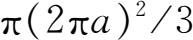
。证明是用穷竭法作出的。在为这作准备的前几个定理中，他把螺线的一段弧BPQRC（图5.8）和两根径矢OB及OC所围的面积夹在两组扇形中。如Bp′，Pq′，Qr′，…是以O为心的圆弧，同样Pb，Qp，Rq，…也是圆弧。内接的一组扇形是OBp′，OPq′，OQr′，…而外接的一组扇形是OPb，OQp，ORq，…于是这里就用扇形代替穷竭法中作为近似形的内接和外切多边形。（我们在微积分里确定极坐标图形的面积时也用这种近似图形。）这种穷竭法的新颖之处是阿基米德选取了愈来愈小的扇形，使螺线弧下面的面积与有限个“内接”扇形之和（还有有限个“外接”扇形之和）的差比任意给定的量还要小。这样来穷竭所求面积的方法，同靠增添愈来愈多的直边形来“穷竭”的方法是不一样的。不过在最后的一部分证明里，阿基米德也像他在证抛物线面积时一样，和欧几里得在用穷竭法的证明里一样，采用间接证法。这里没有明确的极限步骤。
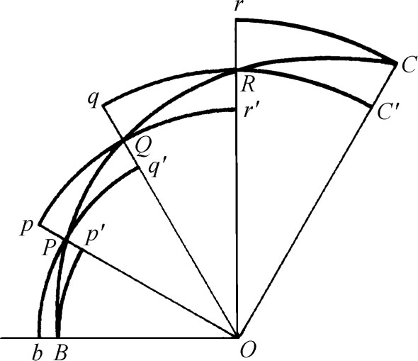
图5.8
阿基米德也给出径矢绕O转完两圈后螺线弧所围的面积；此外还有面积方面的有关结果。附带指出，后代数学家曾用螺线来三等分（而实际上也是任意等分）一个角。
阅读阿基米德的几何著作后，立即可以看出他所关心的是要得出关于面积和体积的有用结果。他在这方面的工作以及一般数学工作，从所得结论说没有什么了不起，其方法和对象也没有什么特别新颖之处，不过他处理了很难的而且是前人所没有处理过的问题。他常说他是读了前人著作后得到启发想起处理这些问题的。例如，欧多克索斯关于棱锥、圆锥和圆柱的著作（欧几里得《原本》中所载）启发阿基米德研究球和圆柱、化圆为方的问题启发他研究抛物线弓形的求积问题。但阿基米德在流体静力学方面的工作完全是独创的；他在力学方面工作的新颖之处是他给出了数学证明（第7章第6节）。他的文字是优美、有条理、周密和有针对性的。